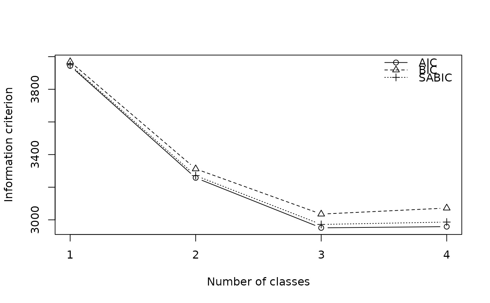

Estimates the measurement model: the class sizes and the class-conditional
item-response probabilities of the indicators on the left-hand side of
formula. This is the first step of three-step estimation; covariates and
distal outcomes are related to the classes afterwards, holding this model
fixed.
Usage
tse_lca(
formula,
data,
nclass,
start = NULL,
missing = c("listwise", "fiml"),
control = tse_control()
)Arguments
- formula
A formula
cbind(Y1, Y2, ...) ~ 1naming the indicators. The measurement model has no covariates.- data
A data frame.
- nclass
Number of latent classes, or a vector of numbers of classes to compare (e.g.
1:6).- start
Optional fixed starting point for the EM algorithm (single
nclassonly): an integer vector with one class per row ofdata, or a matrix of item-response probabilities P(Y = k | X = t) with one row per item category (in the order of the indicators) and one column per class, such asitem_probs()of a fitted model (whose binary items have one row, P(Y = 1 | X = t)). Bypasses the default k-means initialization.- missing
Handling of missing indicator values:
"listwise"(default) drops rows with any missing indicator;"fiml"keeps rows with at least one observed indicator (full-information maximum likelihood).- control
Estimation settings, see
tse_control().
Value
For a single nclass, a tseLCA_measurement object (see
class_sizes(), item_probs(), posterior(), predict(); it keeps
data for tse_classify()); for several,
a tseLCA_select object: the enumeration table with the fitted models,
see best_model().
Details
With a vector nclass, a model is fitted for each number of classes and
the result is a class-enumeration table of fit statistics (see Details).
The number of classes is chosen from the measurement model alone, before any structural variables are considered, typically by the BIC, the interpretability of the classes, and their separation; see Nylund, Asparouhov, and Muthén (2007) and Masyn (2013). The enumeration table reports, for each number of classes, the log-likelihood, number of free parameters, AIC, BIC, sample-size adjusted BIC (SABIC; Sclove 1987), entropy R\(^2\), and the smallest estimated class proportion. The one-class model is the independence model, fitted in closed form.
Indicators may be factors, logicals, character, or numeric codes; their
categories are stored with the model and reused when the model is applied
to new data (see predict.tseLCA_measurement()) or in later steps.
References
Masyn, K. E. (2013). Latent class analysis and finite mixture modeling. In T. D. Little (Ed.), The Oxford Handbook of Quantitative Methods, Vol. 2, 551–611. Oxford University Press.
Nylund, K. L., Asparouhov, T., & Muthén, B. O. (2007). Deciding on the number of classes in latent class analysis and growth mixture modeling: A Monte Carlo simulation study. Structural Equation Modeling, 14(4), 535–569. doi:10.1080/10705510701575396
Sclove, S. L. (1987). Application of model-selection criteria to some problems in multivariate analysis. Psychometrika, 52(3), 333–343. doi:10.1007/BF02294360
Examples
d <- generate_data(500, "high", "covariate", seed = 1)
# Class enumeration
sel <- tse_lca(cbind(Y1, Y2, Y3, Y4, Y5, Y6) ~ 1, data = d, nclass = 1:4)
sel
#> Latent class enumeration (measurement model)
#>
#> nclass logLik npar AIC BIC SABIC entropy.R2 min.class
#> 1 -1966 6 3943.64 3968.93 3949.89 NA 1.0000
#> 2 -1616 13 3257.61 3312.40 3271.13 0.8252 0.4327
#> 3 -1456 20 2951.01* 3035.30* 2971.82* 0.8780 0.3122
#> 4 -1452 27 2958.31 3072.10 2986.40 0.7890 0.1569
#>
#> * smallest value of each criterion. N = 500
plot(sel)

# The selected model
m <- best_model(sel, criterion = "BIC")
m
#> Latent class measurement model
#> Classes: 3 N: 500
#> Log-lik: -1455.5052 (df = 20) AIC: 2951.01 BIC: 3035.30
#> Entropy R²: 0.8780
class_sizes(m)
#> C1 C2 C3
#> 0.356968 0.330817 0.312215
item_probs(m)
#> C1 C2 C3
#> P(Y1|C) 0.9236633 0.86214325 0.11873274
#> P(Y2|C) 0.9083137 0.92191148 0.11779413
#> P(Y3|C) 0.9147941 0.95708298 0.07311785
#> P(Y4|C) 0.8843251 0.14814076 0.08749354
#> P(Y5|C) 0.8817229 0.13404819 0.11180684
#> P(Y6|C) 0.9174174 0.08892803 0.12521007
head(predict(m, newdata = d[1:5, ]))
#> C1 C2 C3
#> 1 1.824468e-03 0.9968413220 0.0013342102
#> 2 1.506890e-06 0.0006435223 0.9993549708
#> 3 1.946520e-03 0.8924386567 0.1056148230
#> 4 9.986386e-01 0.0010902070 0.0002712095
#> 5 1.506890e-06 0.0006435223 0.9993549708